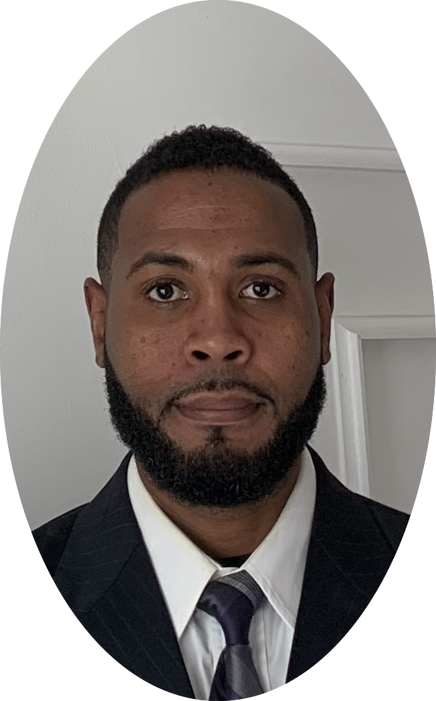

Sem M. Saint-Aubin
117 Martens Ave Valley Stream, NY 11580
Email: saintaubins@gmail.com
Mobile phone (516) 429-8578 Home phone (516) 812-0905
OBJECTIVE:
Highly experienced in Field Service Engineering and Technical Support.
Currently looking for a new opportunity with a company that offers innovative technology.
EDUCATION:
Hofstra University, B.S. May 2007, Computer Engineering, Hempstead, NY
SUNY Nassau, A.A.S May 2004, C.I.S., Garden City, NY
RELATED COURSES: Biology, Chemistry, Anatomy and Physiology, Psychology.
EXPERIENCE:
Carl Zeiss Meditec. Dublin, CA: 7/10 - 10/19
Field Service Engineer
BS degree in Computer Engineering, Computer Technology and related fields.
A+, and Net + certifications.
Theoretical understanding of basic electromechanical, electronic, and optical systems.
Strong understanding of troubleshooting techniques and approaches.
I have good verbal and written communication skills.
I have strong computer skills with the ability to obtain specific certifications as required.
I am able to pass required training to service fine mechanics and optics. I have the ability
to effectively service equipment once training is completed.
Behlman Electronics Hauppauge, NY: 8/08 - 7/10
Electrical Engineer
Strong use of design and analysis with analog and digital circuits.
with use of electrical engineering principles.
Design, test and troubleshoot of AC, DC, and uninterruptible Power Supplies, inverters,
Frequency converters used for commercial, industrial and military specifications.
Cable Vison Melville, NY: 11/07 - 8/08
Technical Support Group
Strong trouble shooting skills including RF signal recognition and detection,
TCP/IP, DHCP, ARP, PING, FTP, IPCONFIG, TRACERT, TELNET, including complex
Knowledge of DOS, Win 95, 98, NT, 2000, XP, Apple/MAC, Internet communications, and protocols,
E-mail client Analysis for Microsoft, and Macintosh machines.
Thorough documentation of trouble tickets, in competitive, fast paced, self-staring,
highly motivated and customer friendly Environment.
Telephonics Corp. Melville, NY: 1/07 - 5/07
Hardware and Software Engineer
Strong programming and design skills, Network Signal Frequency Detection Mechanism Design.
I used VHDL, Aldec, C++, Java, FPGA, and Spartan hardware.
In-depth knowledge of computer architecture and components.
Microprocessor/Microcontroller Design/simulation of analog and digital circuits (e.g. PSpice, Aldec)
We used Xilinx, and the IEEE 1588 Protocol for network time synchronization and implementation.
Pitney Bowes: Brooklyn, NY: 10/00 - 3/04
Customer Service Technician
Strong troubleshooting and repairing skills, business machine installations.
Farmiliar with, computer network maintenance and support, PM’s.
Daily tasks were 30% Mechanical, 30% Electrical, and 40% Software Driven environment.
Military EXPERIENCE: 8/96 - 8/00
U.S. Marine Corps. Camp Pendleton, CA / Camp Fuji Japan
Heavy Equipment Engineer
Diesel Engine Maintenance and Repairs, Electronic Troubleshooting, Digital Analyst, and Multimedia Technologist.
Supervised and evaluated up to 20 engineers
CERTIFICATIONS:
Member of IEEE
Member of S.A.C. Society for Advancement of Computing
A+, Network+, Microsoft MCP, Novell CNA Certifications
About Me
Main Page